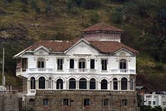

Salto de Tequendama

El Salto de Tequendama es una impresionante cascada natural ubicada cerca de Bogotá, en el municipio de Soacha, Colombia. Esta caída de agua, de aproximadamente 157 metros de altura, está formada por el río Bogotá y se precipita desde un alto acantilado en medio de un frondoso paisaje montañoso, ofreciendo vistas espectaculares.
Parque Natural Chicaque
El Parque Natural Chicaque es una reserva ecológica que ofrece más de 300 hectáreas de bosques, senderos, y miradores con vistas excepcionales. Es ideal para caminatas, observación de aves, y actividades al aire libre. Chicaque tiene una biodiversidad rica y es el hogar de especies nativas de flora y fauna. Los visitantes pueden disfrutar de miradores, cascadas y un ambiente de paz y naturaleza.
Casa Museo Tequendama
La Casa Museo Tequendama, ubicada al borde del Salto de Tequendama, es un sitio histórico y cultural que narra la historia de la región y la importancia del salto en la cosmovisión indígena muisca. La casa, que fue construida en el siglo XX, se ha restaurado y ahora sirve como museo, exhibiendo exposiciones sobre la geología, ecología, y cultura de la región.
Laguna de la Herrera
La Laguna de la Herrera es un humedal protegido y uno de los ecosistemas de mayor importancia en el municipio de Soacha. Alberga una variedad de aves acuáticas y especies en peligro de extinción, por lo que es popular entre los observadores de aves y amantes de la naturaleza. Es un espacio de conservación natural que representa un valioso recurso ecológico y paisajístico.
Cerro El Sol
El Cerro El Sol es una montaña con una vista panorámica del valle de Soacha y Bogotá. Es un sitio perfecto para hacer senderismo, disfrutando del paisaje y la tranquilidad. En días despejados, desde su cima se pueden apreciar impresionantes vistas de los alrededores. También es un lugar ideal para realizar actividades al aire libre y desconectarse de la ciudad.